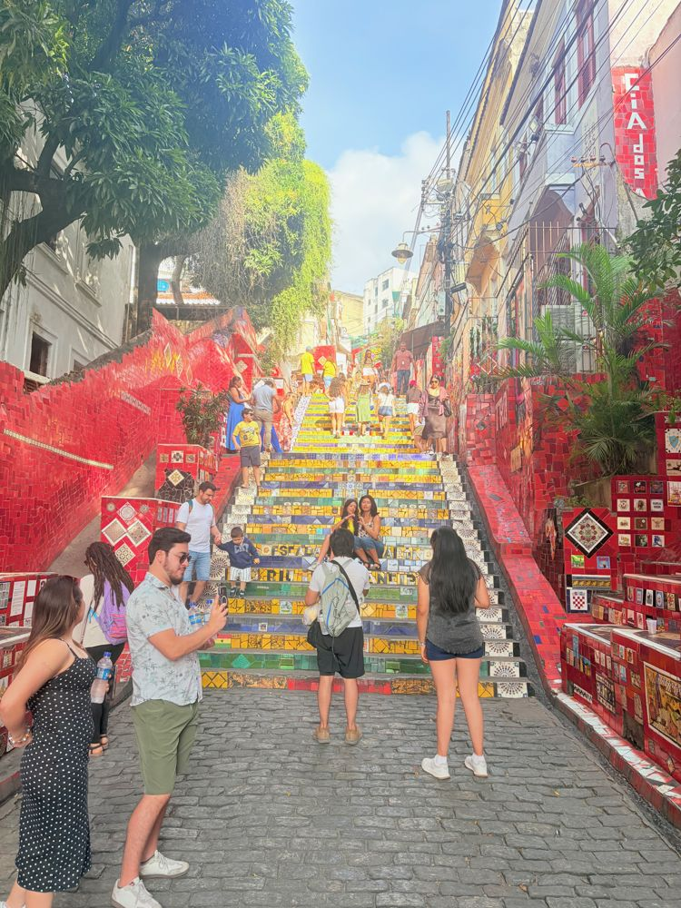
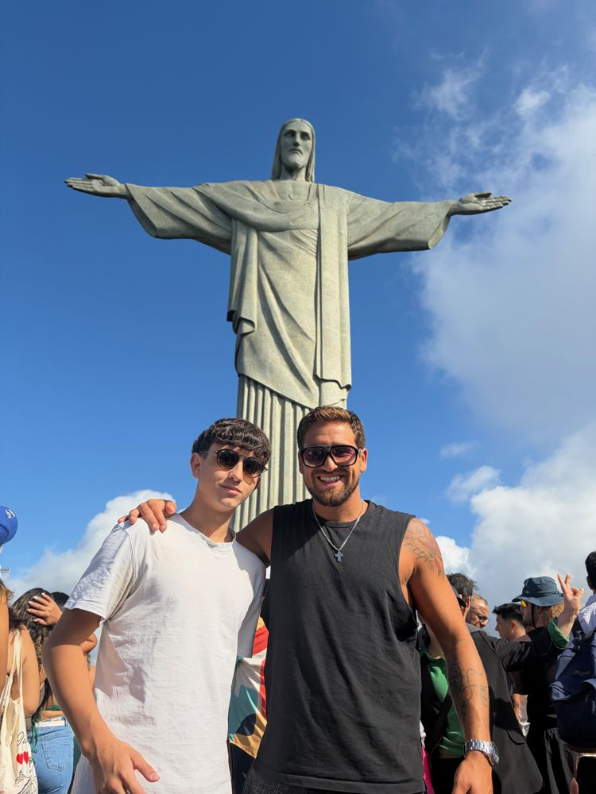
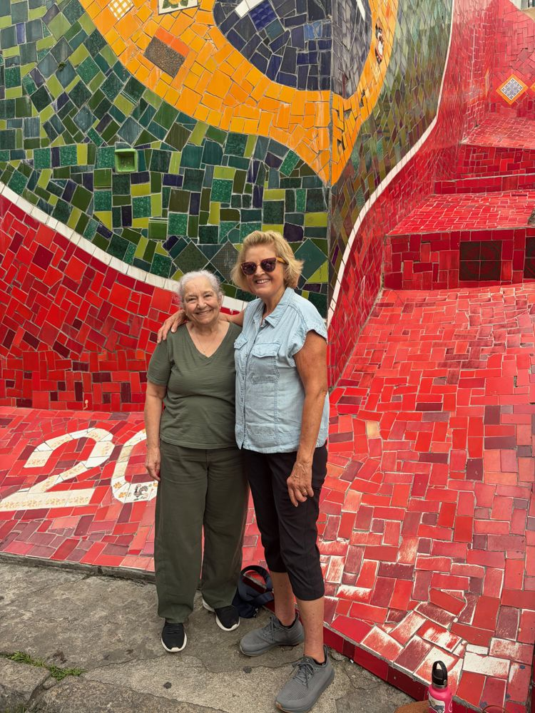
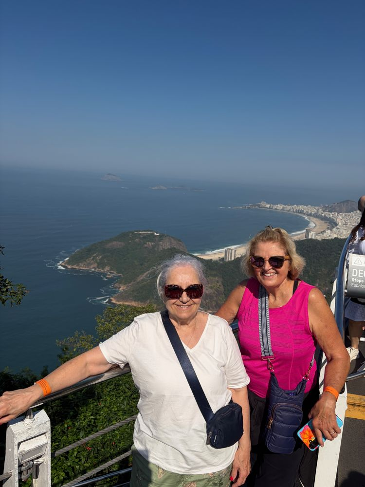

EXPERIENCIA RIO IA
Un día
en Río
Los íconos de la ciudad en una sola jornada, con guía, traslado, entradas y almuerzo incluidos.
Cristo RedentorPan de AzúcarSelarónDía completo
VALORDesde R$ 450
Por adulto, con entradas, traslado, guía y almuerzo. Niños con descuento.
El recorrido

Cristo Redentor
Subida al Corcovado para ver la ciudad entera a los pies del Cristo.
Pan de Azúcar
El bondinho más famoso de Río, con la bahía de Guanabara de fondo.

Escadaria Selarón
Los escalones de azulejos de todo el mundo, el rincón más colorido de Río.
Momentos reales de nuestros paseos

Con el Cristo de fondo Nuestros grupos
Nuestros grupos En la Selarón
En la Selarón
Arte en cada escalónBajando en el bondinho

Vista desde el Pan de Azúcar Arriba del morro
Arriba del morroClientes felices
Fotos y videos reales de nuestros paseos.
Qué incluye
- Guía durante todo el recorrido
- Traslado desde Zona Sur o Centro (salida 7:45)
- Entradas al Cristo Redentor y al Pan de Azúcar
- Almuerzo
- Paradas en Maracanã (por fuera), Catedral Metropolitana y Sambódromo
Qué llevar
- Documento con foto
- Protector solar
- Ropa cómoda
Bueno saber
Duración: unas 10 horas.
No incluye: bebidas, postres y la visita interna al Maracanã.
Niños: hasta 2 años no pagan (en brazos) · 3 y 4 años pagan solo el Pan de Azúcar · 5 a 10 años, 50% de descuento.
No incluye: bebidas, postres y la visita interna al Maracanã.
Niños: hasta 2 años no pagan (en brazos) · 3 y 4 años pagan solo el Pan de Azúcar · 5 a 10 años, 50% de descuento.
Cómo reservar
Reserva: se confirma con el pago del 100%, por Pix o tarjeta (con tarjeta +5%). Te confirmamos todo por WhatsApp.
Reservar por WhatsApp